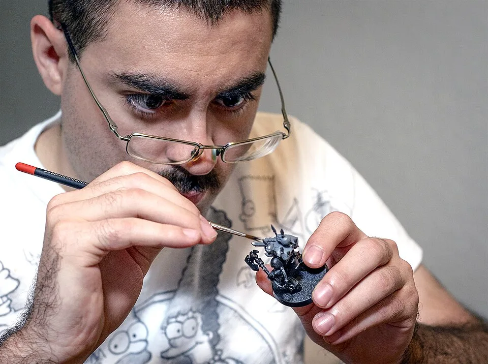
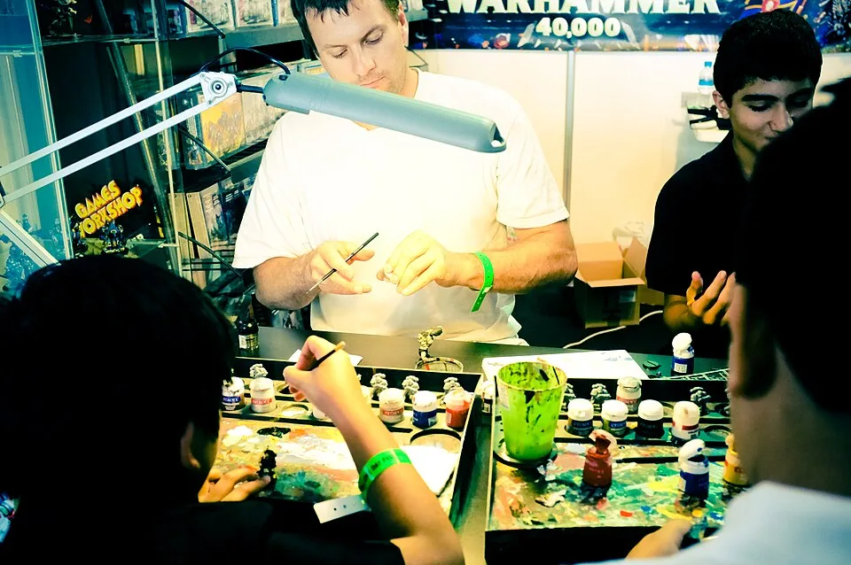

01เครื่องมือ
| เครื่องมือ | ใช้ทำอะไร | จำเป็นแค่ไหน |
|---|---|---|
| คีมตัด (Clippers) | ตัดชิ้นส่วนออกจากแผง | จำเป็นมาก |
| ที่ขูด/คัตเตอร์ | ลบรอยตะเข็บแม่พิมพ์และเศษพลาสติก | ควรมี |
| กาวพลาสติก (Plastic Glue) | เชื่อมชิ้นพลาสติกด้วยการละลายผิวเล็กน้อย แข็งแรงมาก | ควรมี (ชุดเริ่มต้น 11th ไม่ต้องใช้) |
| กาวร้อน (Superglue) | ติดชิ้นเรซิน/โลหะ หรือชิ้นที่ทาสีแล้ว | มีก็ดี |
| สเปรย์รองพื้น (Primer) | รองพื้นทั้งตัว ให้สีเกาะดี | ควรมี |
| พู่กัน | เบอร์กลางสำหรับลงสีพื้น เบอร์เล็กสำหรับรายละเอียด แปรงแข็งสำหรับ drybrush | จำเป็นมาก |
| จานผสมสี / Wet Palette | ผสมและเจือจางสีด้วยน้ำ (wet palette ช่วยให้สีไม่แห้งเร็ว) | มีก็ดี |
| ด้ามจับโมเดล (Painting handle) | จับโมเดลโดยไม่โดนสีเปียก | มีก็ดี |
| แก้วน้ำล้างพู่กัน + ไฟดี ๆ | ล้างพู่กัน · มองเห็นรายละเอียดชัด | จำเป็น |
02ประกอบโมเดล
- อ่านคู่มือประกอบดูหมายเลขชิ้นส่วนบนแผง และตัดสินใจเรื่องอาวุธก่อน (บางชิ้นเลือกได้ทางเดียว)
- ตัดชิ้นส่วนตัดห่างจากตัวชิ้นเล็กน้อยก่อน แล้วค่อยตัดชิดอีกครั้ง จะไม่แหว่ง
- ขูดรอยตะเข็บใช้สันใบมีดขูดเบา ๆ ตามรอยเส้นนูน (mould line)
- ลองประกอบแห้ง (dry fit)ประกบก่อนทากาว ดูว่าเข้ากันดีไหม
- ทากาวบาง ๆกาวพลาสติกใช้นิดเดียวพอ กดค้างไว้ไม่กี่วินาที
- ติดบนฐานตรวจขนาดฐานให้ตรงกับที่โมเดลมากับกล่อง เพราะขนาดฐานมีผลต่อการวัดระยะในเกม
บางชิ้นที่ลงสียาก (เช่น หน้า หรือด้านในเสื้อคลุม) ช่างทำสีหลายคนเลือกทาสีก่อนประกอบ (sub-assembly) ลองดูตามความถนัด
03ลงสีทีละขั้น

- Prime (ไพรม์ — รองพื้น)พ่นสเปรย์รองพื้นบาง ๆ จากระยะประมาณ 20–30 ซม. ในที่อากาศแห้ง สีดำ เทา หรือขาว (ดำซ่อนจุดพลาดง่าย ขาวทำให้สีสว่างสด)
- Basecoat (เบสโค้ท — ลงสีพื้น)ลงสีหลักแต่ละส่วน เช่น เกราะ ปืน ผิว เจือน้ำเล็กน้อย และลง 2 ชั้นบาง ๆ ดีกว่าชั้นเดียวหนา ๆ
- Shade / Wash (เชด — ลงเงา)สีเหลวที่ไหลลงร่อง ทำให้เกิดเงาและดูมีมิติทันที เป็นขั้นที่ "คุ้มที่สุด" สำหรับมือใหม่
- Layer (เลเยอร์ — ลงชั้นสว่าง)ลงสีเดิมอีกครั้งบนส่วนนูน เว้นร่องที่มีเงาไว้
- Highlight (ไฮไลต์ — เน้นขอบ)ใช้สีที่สว่างกว่าลากตามขอบคม ๆ เพื่อให้รายละเอียดเด่น
- Basing (ทำฐาน)ทาสีเท็กซ์เจอร์หรือทรายบนฐาน ลงสี drybrush แล้วทาขอบฐานสีเข้ม
- Varnish (วานิช — เคลือบ)พ่นเคลือบด้านเพื่อกันสีถลอกเวลาเล่น
Drybrush (ดรายบรัช)
ใช้พู่กันแข็ง แตะสีแล้วเช็ดออกจนแทบแห้ง ปัดเร็ว ๆ ผ่านผิวนูน ได้ไฮไลต์เร็วมาก เหมาะกับขน หิน โลหะ และฐาน
สีแบบ One-coat / Contrast
สีโปร่งแสงที่ลงชั้นเดียวบนรองพื้นสีขาว/เทาอ่อน แล้วได้ทั้งสีพื้นและเงาในทีเดียว ช่วยให้ทาสีทหารจำนวนมากได้เร็ว
04เคล็ดลับมือใหม่
- เจือจางสี — ปัญหาอันดับหนึ่งคือสีข้นเกินจนรายละเอียดหาย ให้สีเหลวประมาณนมสด
- อย่าจุ่มพู่กันลึกถึงโคน — ใช้แค่ปลายขน ล้างพู่กันบ่อย ๆ และอย่าแช่ทิ้งไว้ในน้ำ
- ทาสีเป็นชุด (batch painting) — ทาสีเดียวกันทีละหลายตัว เร็วกว่าทำทีละตัวจนเสร็จ
- เป้าหมายแรก: "Battle Ready" — สีพื้นครบทุกส่วน + เชด + ทำฐาน ก็ดูดีบนโต๊ะแล้ว
- มองจากระยะแขน — บนโต๊ะเกมไม่มีใครเห็นรายละเอียดระดับซูม
- ทำสีผิด? ไม่เป็นไร — รอแห้งแล้วทาทับ หรือลอกสีออกแล้วเริ่มใหม่ได้
- ดูสีประจำทัพ — Codex และเว็บไซต์ทางการมีแนวสีตัวอย่าง แต่จะคิดสีทัพของตัวเองก็ได้เต็มที่
